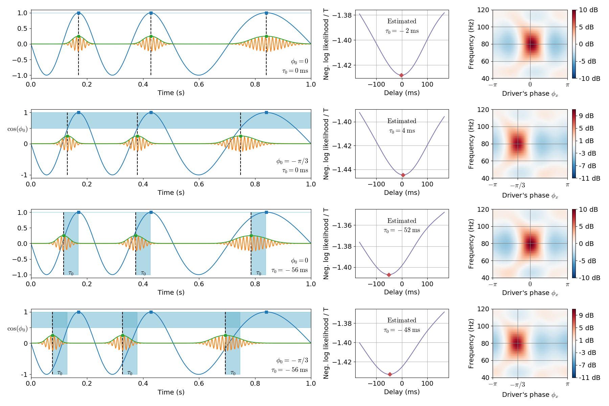

Phase shift and temporal delay in PAC¶
This example disantangles the two distinct notions of phase shift and temporal delay in phase-amplitude coupling. The phase shift ($phi$) is the phase of the slow oscillation which corresponds to the maximum amplitude of the fast oscillation. The temporal delay ($tau$) is the delay between the two coupled components. The two notions would be identical should the driver be a perfect stationary sinusoid.
(1st line) When both are equal to zero, the high frequency bursts happen in the driver’s peaks.
(2nd line) When $tau = 0$ and $phi != 0$, the bursts are shifted in time with respect to the driver’s peaks, and this shift varies depending on the instantaneous frequency of the driver.
(3rd line) When $tau != 0$ and $phi = 0$, the bursts are shifted in time with respect to the driver’s peaks, and this shift is constant over the signal. In this case, note how the driver’s phase corresponding to the bursts varies depending on the instantaneous frequency of the driver.
(4th line) Both $tau$ and $phi$ can also be both non-zero.
The temporal delay is estimated maximizing the likelihood on DAR models. The phase shift is extracted from a DAR model fitted with the optimal temporal delay.
References¶
Dupre la Tour et al. (2017). Non-linear Auto-Regressive Models for Cross-Frequency Coupling in Neural Time Series. bioRxiv, 159731.
Out:
[ ] 0% | 0.00 sec | delays
[ ] 1% | 0.08 sec | delays
[ ] 1% | 0.16 sec | delays
[ ] 2% | 0.24 sec | delays
[ ] 2% | 0.32 sec | delays
[. ] 3% | 0.40 sec | delays
[. ] 4% | 0.48 sec | delays
[. ] 4% | 0.55 sec | delays
[. ] 5% | 0.64 sec | delays
[.. ] 5% | 0.72 sec | delays
[.. ] 6% | 0.80 sec | delays
[.. ] 7% | 0.87 sec | delays
[.. ] 7% | 0.95 sec | delays
[... ] 8% | 1.03 sec | delays
[... ] 8% | 1.11 sec | delays
[... ] 9% | 1.19 sec | delays
[... ] 10% | 1.26 sec | delays
[.... ] 10% | 1.34 sec | delays
[.... ] 11% | 1.42 sec | delays
[.... ] 11% | 1.50 sec | delays
[.... ] 12% | 1.57 sec | delays
[..... ] 13% | 1.65 sec | delays
[..... ] 13% | 1.73 sec | delays
[..... ] 14% | 1.80 sec | delays
[..... ] 14% | 1.88 sec | delays
[..... ] 15% | 1.96 sec | delays
[...... ] 16% | 2.03 sec | delays
[...... ] 16% | 2.11 sec | delays
[...... ] 17% | 2.19 sec | delays
[...... ] 17% | 2.27 sec | delays
[....... ] 18% | 2.34 sec | delays
[....... ] 19% | 2.42 sec | delays
[....... ] 19% | 2.50 sec | delays
[....... ] 20% | 2.57 sec | delays
[........ ] 20% | 2.65 sec | delays
[........ ] 21% | 2.73 sec | delays
[........ ] 22% | 2.81 sec | delays
[........ ] 22% | 2.89 sec | delays
[......... ] 23% | 2.97 sec | delays
[......... ] 23% | 3.05 sec | delays
[......... ] 24% | 3.13 sec | delays
[......... ] 25% | 3.21 sec | delays
[.......... ] 25% | 3.29 sec | delays
[.......... ] 26% | 3.37 sec | delays
[.......... ] 26% | 3.45 sec | delays
[.......... ] 27% | 3.52 sec | delays
[........... ] 28% | 3.60 sec | delays
[........... ] 28% | 3.68 sec | delays
[........... ] 29% | 3.77 sec | delays
[........... ] 29% | 3.84 sec | delays
[........... ] 30% | 3.92 sec | delays
[............ ] 31% | 4.00 sec | delays
[............ ] 31% | 4.08 sec | delays
[............ ] 32% | 4.15 sec | delays
[............ ] 32% | 4.23 sec | delays
[............. ] 33% | 4.31 sec | delays
[............. ] 34% | 4.39 sec | delays
[............. ] 34% | 4.47 sec | delays
[............. ] 35% | 4.55 sec | delays
[.............. ] 35% | 4.62 sec | delays
[.............. ] 36% | 4.70 sec | delays
[.............. ] 37% | 4.78 sec | delays
[.............. ] 37% | 4.86 sec | delays
[............... ] 38% | 4.93 sec | delays
[............... ] 38% | 5.01 sec | delays
[............... ] 39% | 5.09 sec | delays
[............... ] 40% | 5.17 sec | delays
[................ ] 40% | 5.25 sec | delays
[................ ] 41% | 5.32 sec | delays
[................ ] 41% | 5.40 sec | delays
[................ ] 42% | 5.48 sec | delays
[................. ] 43% | 5.55 sec | delays
[................. ] 43% | 5.63 sec | delays
[................. ] 44% | 5.71 sec | delays
[................. ] 44% | 5.79 sec | delays
[................. ] 45% | 5.86 sec | delays
[.................. ] 46% | 5.95 sec | delays
[.................. ] 46% | 6.04 sec | delays
[.................. ] 47% | 6.11 sec | delays
[.................. ] 47% | 6.19 sec | delays
[................... ] 48% | 6.26 sec | delays
[................... ] 49% | 6.34 sec | delays
[................... ] 49% | 6.41 sec | delays
[................... ] 50% | 6.48 sec | delays
[.................... ] 50% | 6.55 sec | delays
[.................... ] 51% | 6.63 sec | delays
[.................... ] 51% | 6.70 sec | delays
[.................... ] 52% | 6.78 sec | delays
[..................... ] 53% | 6.86 sec | delays
[..................... ] 53% | 6.94 sec | delays
[..................... ] 54% | 7.02 sec | delays
[..................... ] 54% | 7.10 sec | delays
[...................... ] 55% | 7.18 sec | delays
[...................... ] 56% | 7.25 sec | delays
[...................... ] 56% | 7.33 sec | delays
[...................... ] 57% | 7.41 sec | delays
[...................... ] 57% | 7.48 sec | delays
[....................... ] 58% | 7.56 sec | delays
[....................... ] 59% | 7.64 sec | delays
[....................... ] 59% | 7.71 sec | delays
[....................... ] 60% | 7.79 sec | delays
[........................ ] 60% | 7.87 sec | delays
[........................ ] 61% | 7.95 sec | delays
[........................ ] 62% | 8.03 sec | delays
[........................ ] 62% | 8.11 sec | delays
[......................... ] 63% | 8.19 sec | delays
[......................... ] 63% | 8.26 sec | delays
[......................... ] 64% | 8.34 sec | delays
[......................... ] 65% | 8.42 sec | delays
[.......................... ] 65% | 8.49 sec | delays
[.......................... ] 66% | 8.57 sec | delays
[.......................... ] 66% | 8.71 sec | delays
[.......................... ] 67% | 8.81 sec | delays
[........................... ] 68% | 8.89 sec | delays
[........................... ] 68% | 8.97 sec | delays
[........................... ] 69% | 9.05 sec | delays
[........................... ] 69% | 9.13 sec | delays
[............................ ] 70% | 9.21 sec | delays
[............................ ] 71% | 9.28 sec | delays
[............................ ] 71% | 9.36 sec | delays
[............................ ] 72% | 9.44 sec | delays
[............................ ] 72% | 9.52 sec | delays
[............................. ] 73% | 9.60 sec | delays
[............................. ] 74% | 9.68 sec | delays
[............................. ] 74% | 9.76 sec | delays
[............................. ] 75% | 9.86 sec | delays
[.............................. ] 75% | 9.97 sec | delays
[.............................. ] 76% | 10.05 sec | delays
[.............................. ] 77% | 10.13 sec | delays
[.............................. ] 77% | 10.25 sec | delays
[............................... ] 78% | 10.33 sec | delays
[............................... ] 78% | 10.41 sec | delays
[............................... ] 79% | 10.49 sec | delays
[............................... ] 80% | 10.56 sec | delays
[................................ ] 80% | 10.64 sec | delays
[................................ ] 81% | 10.72 sec | delays
[................................ ] 81% | 10.80 sec | delays
[................................ ] 82% | 10.88 sec | delays
[................................. ] 83% | 10.96 sec | delays
[................................. ] 83% | 11.04 sec | delays
[................................. ] 84% | 11.12 sec | delays
[................................. ] 84% | 11.20 sec | delays
[.................................. ] 85% | 11.28 sec | delays
[.................................. ] 86% | 11.35 sec | delays
[.................................. ] 86% | 11.43 sec | delays
[.................................. ] 87% | 11.51 sec | delays
[.................................. ] 87% | 11.59 sec | delays
[................................... ] 88% | 11.67 sec | delays
[................................... ] 89% | 11.74 sec | delays
[................................... ] 89% | 11.82 sec | delays
[................................... ] 90% | 11.90 sec | delays
[.................................... ] 90% | 11.97 sec | delays
[.................................... ] 91% | 12.05 sec | delays
[.................................... ] 92% | 12.13 sec | delays
[.................................... ] 92% | 12.21 sec | delays
[..................................... ] 93% | 12.29 sec | delays
[..................................... ] 93% | 12.37 sec | delays
[..................................... ] 94% | 12.45 sec | delays
[..................................... ] 95% | 12.53 sec | delays
[...................................... ] 95% | 12.60 sec | delays
[...................................... ] 96% | 12.68 sec | delays
[...................................... ] 96% | 12.75 sec | delays
[...................................... ] 97% | 12.83 sec | delays
[....................................... ] 98% | 12.90 sec | delays
[....................................... ] 98% | 12.98 sec | delays
[....................................... ] 99% | 13.06 sec | delays
[....................................... ] 99% | 13.14 sec | delays
[........................................] 100% | 13.26 sec | delays
[ ] 0% | 0.00 sec | delays
[ ] 1% | 0.08 sec | delays
[ ] 1% | 0.16 sec | delays
[ ] 2% | 0.23 sec | delays
[ ] 2% | 0.31 sec | delays
[. ] 3% | 0.39 sec | delays
[. ] 4% | 0.47 sec | delays
[. ] 4% | 0.54 sec | delays
[. ] 5% | 0.62 sec | delays
[.. ] 5% | 0.70 sec | delays
[.. ] 6% | 0.77 sec | delays
[.. ] 7% | 0.85 sec | delays
[.. ] 7% | 0.93 sec | delays
[... ] 8% | 1.00 sec | delays
[... ] 8% | 1.09 sec | delays
[... ] 9% | 1.18 sec | delays
[... ] 10% | 1.25 sec | delays
[.... ] 10% | 1.33 sec | delays
[.... ] 11% | 1.41 sec | delays
[.... ] 11% | 1.48 sec | delays
[.... ] 12% | 1.56 sec | delays
[..... ] 13% | 1.64 sec | delays
[..... ] 13% | 1.72 sec | delays
[..... ] 14% | 1.79 sec | delays
[..... ] 14% | 1.87 sec | delays
[..... ] 15% | 1.95 sec | delays
[...... ] 16% | 2.02 sec | delays
[...... ] 16% | 2.10 sec | delays
[...... ] 17% | 2.18 sec | delays
[...... ] 17% | 2.26 sec | delays
[....... ] 18% | 2.34 sec | delays
[....... ] 19% | 2.42 sec | delays
[....... ] 19% | 2.50 sec | delays
[....... ] 20% | 2.58 sec | delays
[........ ] 20% | 2.66 sec | delays
[........ ] 21% | 2.74 sec | delays
[........ ] 22% | 2.82 sec | delays
[........ ] 22% | 2.90 sec | delays
[......... ] 23% | 2.98 sec | delays
[......... ] 23% | 3.06 sec | delays
[......... ] 24% | 3.20 sec | delays
[......... ] 25% | 3.29 sec | delays
[.......... ] 25% | 3.47 sec | delays
[.......... ] 26% | 3.56 sec | delays
[.......... ] 26% | 3.64 sec | delays
[.......... ] 27% | 3.72 sec | delays
[........... ] 28% | 3.81 sec | delays
[........... ] 28% | 3.90 sec | delays
[........... ] 29% | 3.98 sec | delays
[........... ] 29% | 4.06 sec | delays
[........... ] 30% | 4.13 sec | delays
[............ ] 31% | 4.21 sec | delays
[............ ] 31% | 4.29 sec | delays
[............ ] 32% | 4.37 sec | delays
[............ ] 32% | 4.45 sec | delays
[............. ] 33% | 4.53 sec | delays
[............. ] 34% | 4.61 sec | delays
[............. ] 34% | 4.74 sec | delays
[............. ] 35% | 4.88 sec | delays
[.............. ] 35% | 5.00 sec | delays
[.............. ] 36% | 5.13 sec | delays
[.............. ] 37% | 5.27 sec | delays
[.............. ] 37% | 5.42 sec | delays
[............... ] 38% | 5.58 sec | delays
[............... ] 38% | 5.69 sec | delays
[............... ] 39% | 5.78 sec | delays
[............... ] 40% | 5.88 sec | delays
[................ ] 40% | 6.00 sec | delays
[................ ] 41% | 6.09 sec | delays
[................ ] 41% | 6.19 sec | delays
[................ ] 42% | 6.29 sec | delays
[................. ] 43% | 6.37 sec | delays
[................. ] 43% | 6.46 sec | delays
[................. ] 44% | 6.54 sec | delays
[................. ] 44% | 6.63 sec | delays
[................. ] 45% | 6.73 sec | delays
[.................. ] 46% | 6.82 sec | delays
[.................. ] 46% | 6.91 sec | delays
[.................. ] 47% | 7.01 sec | delays
[.................. ] 47% | 7.09 sec | delays
[................... ] 48% | 7.18 sec | delays
[................... ] 49% | 7.27 sec | delays
[................... ] 49% | 7.35 sec | delays
[................... ] 50% | 7.44 sec | delays
[.................... ] 50% | 7.52 sec | delays
[.................... ] 51% | 7.60 sec | delays
[.................... ] 51% | 7.68 sec | delays
[.................... ] 52% | 7.76 sec | delays
[..................... ] 53% | 7.84 sec | delays
[..................... ] 53% | 7.91 sec | delays
[..................... ] 54% | 7.99 sec | delays
[..................... ] 54% | 8.07 sec | delays
[...................... ] 55% | 8.15 sec | delays
[...................... ] 56% | 8.22 sec | delays
[...................... ] 56% | 8.30 sec | delays
[...................... ] 57% | 8.38 sec | delays
[...................... ] 57% | 8.46 sec | delays
[....................... ] 58% | 8.54 sec | delays
[....................... ] 59% | 8.62 sec | delays
[....................... ] 59% | 8.70 sec | delays
[....................... ] 60% | 8.78 sec | delays
[........................ ] 60% | 8.86 sec | delays
[........................ ] 61% | 8.93 sec | delays
[........................ ] 62% | 9.01 sec | delays
[........................ ] 62% | 9.09 sec | delays
[......................... ] 63% | 9.17 sec | delays
[......................... ] 63% | 9.24 sec | delays
[......................... ] 64% | 9.32 sec | delays
[......................... ] 65% | 9.40 sec | delays
[.......................... ] 65% | 9.47 sec | delays
[.......................... ] 66% | 9.59 sec | delays
[.......................... ] 66% | 9.81 sec | delays
[.......................... ] 67% | 9.91 sec | delays
[........................... ] 68% | 9.99 sec | delays
[........................... ] 68% | 10.07 sec | delays
[........................... ] 69% | 10.14 sec | delays
[........................... ] 69% | 10.22 sec | delays
[............................ ] 70% | 10.30 sec | delays
[............................ ] 71% | 10.38 sec | delays
[............................ ] 71% | 10.45 sec | delays
[............................ ] 72% | 10.53 sec | delays
[............................ ] 72% | 10.61 sec | delays
[............................. ] 73% | 10.68 sec | delays
[............................. ] 74% | 10.76 sec | delays
[............................. ] 74% | 10.84 sec | delays
[............................. ] 75% | 10.91 sec | delays
[.............................. ] 75% | 10.99 sec | delays
[.............................. ] 76% | 11.07 sec | delays
[.............................. ] 77% | 11.15 sec | delays
[.............................. ] 77% | 11.27 sec | delays
[............................... ] 78% | 11.34 sec | delays
[............................... ] 78% | 11.42 sec | delays
[............................... ] 79% | 11.50 sec | delays
[............................... ] 80% | 11.58 sec | delays
[................................ ] 80% | 11.65 sec | delays
[................................ ] 81% | 11.74 sec | delays
[................................ ] 81% | 11.82 sec | delays
[................................ ] 82% | 11.90 sec | delays
[................................. ] 83% | 11.99 sec | delays
[................................. ] 83% | 12.07 sec | delays
[................................. ] 84% | 12.16 sec | delays
[................................. ] 84% | 12.25 sec | delays
[.................................. ] 85% | 12.34 sec | delays
[.................................. ] 86% | 12.42 sec | delays
[.................................. ] 86% | 12.51 sec | delays
[.................................. ] 87% | 12.61 sec | delays
[.................................. ] 87% | 12.70 sec | delays
[................................... ] 88% | 12.80 sec | delays
[................................... ] 89% | 12.89 sec | delays
[................................... ] 89% | 12.97 sec | delays
[................................... ] 90% | 13.07 sec | delays
[.................................... ] 90% | 13.22 sec | delays
[.................................... ] 91% | 13.35 sec | delays
[.................................... ] 92% | 13.43 sec | delays
[.................................... ] 92% | 13.51 sec | delays
[..................................... ] 93% | 13.60 sec | delays
[..................................... ] 93% | 13.69 sec | delays
[..................................... ] 94% | 13.79 sec | delays
[..................................... ] 95% | 13.87 sec | delays
[...................................... ] 95% | 13.96 sec | delays
[...................................... ] 96% | 14.04 sec | delays
[...................................... ] 96% | 14.20 sec | delays
[...................................... ] 97% | 14.28 sec | delays
[....................................... ] 98% | 14.36 sec | delays
[....................................... ] 98% | 14.44 sec | delays
[....................................... ] 99% | 14.52 sec | delays
[....................................... ] 99% | 14.61 sec | delays
[........................................] 100% | 14.69 sec | delays
[ ] 0% | 0.00 sec | delays
[ ] 1% | 0.08 sec | delays
[ ] 1% | 0.16 sec | delays
[ ] 2% | 0.23 sec | delays
[ ] 2% | 0.31 sec | delays
[. ] 3% | 0.39 sec | delays
[. ] 4% | 0.46 sec | delays
[. ] 4% | 0.54 sec | delays
[. ] 5% | 0.62 sec | delays
[.. ] 5% | 0.70 sec | delays
[.. ] 6% | 0.77 sec | delays
[.. ] 7% | 0.85 sec | delays
[.. ] 7% | 0.93 sec | delays
[... ] 8% | 1.01 sec | delays
[... ] 8% | 1.08 sec | delays
[... ] 9% | 1.16 sec | delays
[... ] 10% | 1.24 sec | delays
[.... ] 10% | 1.32 sec | delays
[.... ] 11% | 1.39 sec | delays
[.... ] 11% | 1.47 sec | delays
[.... ] 12% | 1.55 sec | delays
[..... ] 13% | 1.63 sec | delays
[..... ] 13% | 1.70 sec | delays
[..... ] 14% | 1.78 sec | delays
[..... ] 14% | 1.86 sec | delays
[..... ] 15% | 1.94 sec | delays
[...... ] 16% | 2.02 sec | delays
[...... ] 16% | 2.11 sec | delays
[...... ] 17% | 2.20 sec | delays
[...... ] 17% | 2.28 sec | delays
[....... ] 18% | 2.36 sec | delays
[....... ] 19% | 2.43 sec | delays
[....... ] 19% | 2.51 sec | delays
[....... ] 20% | 2.59 sec | delays
[........ ] 20% | 2.67 sec | delays
[........ ] 21% | 2.75 sec | delays
[........ ] 22% | 2.82 sec | delays
[........ ] 22% | 2.90 sec | delays
[......... ] 23% | 2.98 sec | delays
[......... ] 23% | 3.05 sec | delays
[......... ] 24% | 3.13 sec | delays
[......... ] 25% | 3.21 sec | delays
[.......... ] 25% | 3.29 sec | delays
[.......... ] 26% | 3.37 sec | delays
[.......... ] 26% | 3.45 sec | delays
[.......... ] 27% | 3.52 sec | delays
[........... ] 28% | 3.60 sec | delays
[........... ] 28% | 3.67 sec | delays
[........... ] 29% | 3.75 sec | delays
[........... ] 29% | 3.83 sec | delays
[........... ] 30% | 3.91 sec | delays
[............ ] 31% | 3.98 sec | delays
[............ ] 31% | 4.06 sec | delays
[............ ] 32% | 4.14 sec | delays
[............ ] 32% | 4.21 sec | delays
[............. ] 33% | 4.28 sec | delays
[............. ] 34% | 4.36 sec | delays
[............. ] 34% | 4.43 sec | delays
[............. ] 35% | 4.50 sec | delays
[.............. ] 35% | 4.57 sec | delays
[.............. ] 36% | 4.64 sec | delays
[.............. ] 37% | 4.72 sec | delays
[.............. ] 37% | 4.79 sec | delays
[............... ] 38% | 4.87 sec | delays
[............... ] 38% | 4.95 sec | delays
[............... ] 39% | 5.02 sec | delays
[............... ] 40% | 5.10 sec | delays
[................ ] 40% | 5.18 sec | delays
[................ ] 41% | 5.26 sec | delays
[................ ] 41% | 5.34 sec | delays
[................ ] 42% | 5.41 sec | delays
[................. ] 43% | 5.49 sec | delays
[................. ] 43% | 5.57 sec | delays
[................. ] 44% | 5.64 sec | delays
[................. ] 44% | 5.72 sec | delays
[................. ] 45% | 5.80 sec | delays
[.................. ] 46% | 5.87 sec | delays
[.................. ] 46% | 5.95 sec | delays
[.................. ] 47% | 6.03 sec | delays
[.................. ] 47% | 6.11 sec | delays
[................... ] 48% | 6.19 sec | delays
[................... ] 49% | 6.26 sec | delays
[................... ] 49% | 6.34 sec | delays
[................... ] 50% | 6.42 sec | delays
[.................... ] 50% | 6.50 sec | delays
[.................... ] 51% | 6.57 sec | delays
[.................... ] 51% | 6.65 sec | delays
[.................... ] 52% | 6.73 sec | delays
[..................... ] 53% | 6.80 sec | delays
[..................... ] 53% | 6.88 sec | delays
[..................... ] 54% | 6.96 sec | delays
[..................... ] 54% | 7.03 sec | delays
[...................... ] 55% | 7.11 sec | delays
[...................... ] 56% | 7.19 sec | delays
[...................... ] 56% | 7.27 sec | delays
[...................... ] 57% | 7.34 sec | delays
[...................... ] 57% | 7.42 sec | delays
[....................... ] 58% | 7.50 sec | delays
[....................... ] 59% | 7.57 sec | delays
[....................... ] 59% | 7.65 sec | delays
[....................... ] 60% | 7.73 sec | delays
[........................ ] 60% | 7.80 sec | delays
[........................ ] 61% | 7.88 sec | delays
[........................ ] 62% | 7.96 sec | delays
[........................ ] 62% | 8.03 sec | delays
[......................... ] 63% | 8.11 sec | delays
[......................... ] 63% | 8.20 sec | delays
[......................... ] 64% | 8.27 sec | delays
[......................... ] 65% | 8.35 sec | delays
[.......................... ] 65% | 8.43 sec | delays
[.......................... ] 66% | 8.50 sec | delays
[.......................... ] 66% | 8.59 sec | delays
[.......................... ] 67% | 8.67 sec | delays
[........................... ] 68% | 8.75 sec | delays
[........................... ] 68% | 8.83 sec | delays
[........................... ] 69% | 8.90 sec | delays
[........................... ] 69% | 8.98 sec | delays
[............................ ] 70% | 9.06 sec | delays
[............................ ] 71% | 9.13 sec | delays
[............................ ] 71% | 9.21 sec | delays
[............................ ] 72% | 9.29 sec | delays
[............................ ] 72% | 9.37 sec | delays
[............................. ] 73% | 9.45 sec | delays
[............................. ] 74% | 9.52 sec | delays
[............................. ] 74% | 9.60 sec | delays
[............................. ] 75% | 9.68 sec | delays
[.............................. ] 75% | 9.75 sec | delays
[.............................. ] 76% | 9.84 sec | delays
[.............................. ] 77% | 9.91 sec | delays
[.............................. ] 77% | 9.99 sec | delays
[............................... ] 78% | 10.07 sec | delays
[............................... ] 78% | 10.15 sec | delays
[............................... ] 79% | 10.22 sec | delays
[............................... ] 80% | 10.30 sec | delays
[................................ ] 80% | 10.38 sec | delays
[................................ ] 81% | 10.45 sec | delays
[................................ ] 81% | 10.53 sec | delays
[................................ ] 82% | 10.61 sec | delays
[................................. ] 83% | 10.69 sec | delays
[................................. ] 83% | 10.76 sec | delays
[................................. ] 84% | 10.84 sec | delays
[................................. ] 84% | 10.92 sec | delays
[.................................. ] 85% | 11.00 sec | delays
[.................................. ] 86% | 11.07 sec | delays
[.................................. ] 86% | 11.15 sec | delays
[.................................. ] 87% | 11.23 sec | delays
[.................................. ] 87% | 11.30 sec | delays
[................................... ] 88% | 11.38 sec | delays
[................................... ] 89% | 11.45 sec | delays
[................................... ] 89% | 11.53 sec | delays
[................................... ] 90% | 11.61 sec | delays
[.................................... ] 90% | 11.68 sec | delays
[.................................... ] 91% | 11.76 sec | delays
[.................................... ] 92% | 11.84 sec | delays
[.................................... ] 92% | 11.91 sec | delays
[..................................... ] 93% | 11.99 sec | delays
[..................................... ] 93% | 12.07 sec | delays
[..................................... ] 94% | 12.15 sec | delays
[..................................... ] 95% | 12.23 sec | delays
[...................................... ] 95% | 12.30 sec | delays
[...................................... ] 96% | 12.38 sec | delays
[...................................... ] 96% | 12.46 sec | delays
[...................................... ] 97% | 12.53 sec | delays
[....................................... ] 98% | 12.61 sec | delays
[....................................... ] 98% | 12.69 sec | delays
[....................................... ] 99% | 12.78 sec | delays
[....................................... ] 99% | 12.86 sec | delays
[........................................] 100% | 12.94 sec | delays
[ ] 0% | 0.00 sec | delays
[ ] 1% | 0.08 sec | delays
[ ] 1% | 0.15 sec | delays
[ ] 2% | 0.23 sec | delays
[ ] 2% | 0.31 sec | delays
[. ] 3% | 0.39 sec | delays
[. ] 4% | 0.46 sec | delays
[. ] 4% | 0.54 sec | delays
[. ] 5% | 0.62 sec | delays
[.. ] 5% | 0.69 sec | delays
[.. ] 6% | 0.77 sec | delays
[.. ] 7% | 0.85 sec | delays
[.. ] 7% | 0.93 sec | delays
[... ] 8% | 1.01 sec | delays
[... ] 8% | 1.08 sec | delays
[... ] 9% | 1.16 sec | delays
[... ] 10% | 1.24 sec | delays
[.... ] 10% | 1.32 sec | delays
[.... ] 11% | 1.39 sec | delays
[.... ] 11% | 1.47 sec | delays
[.... ] 12% | 1.54 sec | delays
[..... ] 13% | 1.62 sec | delays
[..... ] 13% | 1.70 sec | delays
[..... ] 14% | 1.77 sec | delays
[..... ] 14% | 1.85 sec | delays
[..... ] 15% | 1.93 sec | delays
[...... ] 16% | 2.01 sec | delays
[...... ] 16% | 2.08 sec | delays
[...... ] 17% | 2.16 sec | delays
[...... ] 17% | 2.24 sec | delays
[....... ] 18% | 2.31 sec | delays
[....... ] 19% | 2.39 sec | delays
[....... ] 19% | 2.46 sec | delays
[....... ] 20% | 2.54 sec | delays
[........ ] 20% | 2.60 sec | delays
[........ ] 21% | 2.68 sec | delays
[........ ] 22% | 2.76 sec | delays
[........ ] 22% | 2.83 sec | delays
[......... ] 23% | 2.91 sec | delays
[......... ] 23% | 2.99 sec | delays
[......... ] 24% | 3.06 sec | delays
[......... ] 25% | 3.14 sec | delays
[.......... ] 25% | 3.22 sec | delays
[.......... ] 26% | 3.30 sec | delays
[.......... ] 26% | 3.38 sec | delays
[.......... ] 27% | 3.45 sec | delays
[........... ] 28% | 3.53 sec | delays
[........... ] 28% | 3.61 sec | delays
[........... ] 29% | 3.68 sec | delays
[........... ] 29% | 3.76 sec | delays
[........... ] 30% | 3.84 sec | delays
[............ ] 31% | 3.91 sec | delays
[............ ] 31% | 3.99 sec | delays
[............ ] 32% | 4.07 sec | delays
[............ ] 32% | 4.14 sec | delays
[............. ] 33% | 4.22 sec | delays
[............. ] 34% | 4.30 sec | delays
[............. ] 34% | 4.38 sec | delays
[............. ] 35% | 4.46 sec | delays
[.............. ] 35% | 4.53 sec | delays
[.............. ] 36% | 4.61 sec | delays
[.............. ] 37% | 4.69 sec | delays
[.............. ] 37% | 4.76 sec | delays
[............... ] 38% | 4.84 sec | delays
[............... ] 38% | 4.92 sec | delays
[............... ] 39% | 5.00 sec | delays
[............... ] 40% | 5.07 sec | delays
[................ ] 40% | 5.15 sec | delays
[................ ] 41% | 5.23 sec | delays
[................ ] 41% | 5.31 sec | delays
[................ ] 42% | 5.38 sec | delays
[................. ] 43% | 5.46 sec | delays
[................. ] 43% | 5.54 sec | delays
[................. ] 44% | 5.61 sec | delays
[................. ] 44% | 5.69 sec | delays
[................. ] 45% | 5.77 sec | delays
[.................. ] 46% | 5.94 sec | delays
[.................. ] 46% | 6.15 sec | delays
[.................. ] 47% | 6.30 sec | delays
[.................. ] 47% | 6.42 sec | delays
[................... ] 48% | 6.59 sec | delays
[................... ] 49% | 6.69 sec | delays
[................... ] 49% | 6.76 sec | delays
[................... ] 50% | 6.84 sec | delays
[.................... ] 50% | 6.92 sec | delays
[.................... ] 51% | 6.99 sec | delays
[.................... ] 51% | 7.07 sec | delays
[.................... ] 52% | 7.14 sec | delays
[..................... ] 53% | 7.22 sec | delays
[..................... ] 53% | 7.30 sec | delays
[..................... ] 54% | 7.38 sec | delays
[..................... ] 54% | 7.45 sec | delays
[...................... ] 55% | 7.53 sec | delays
[...................... ] 56% | 7.61 sec | delays
[...................... ] 56% | 7.68 sec | delays
[...................... ] 57% | 7.76 sec | delays
[...................... ] 57% | 7.84 sec | delays
[....................... ] 58% | 7.91 sec | delays
[....................... ] 59% | 7.99 sec | delays
[....................... ] 59% | 8.07 sec | delays
[....................... ] 60% | 8.15 sec | delays
[........................ ] 60% | 8.22 sec | delays
[........................ ] 61% | 8.30 sec | delays
[........................ ] 62% | 8.37 sec | delays
[........................ ] 62% | 8.45 sec | delays
[......................... ] 63% | 8.53 sec | delays
[......................... ] 63% | 8.62 sec | delays
[......................... ] 64% | 8.70 sec | delays
[......................... ] 65% | 8.78 sec | delays
[.......................... ] 65% | 8.86 sec | delays
[.......................... ] 66% | 8.93 sec | delays
[.......................... ] 66% | 9.01 sec | delays
[.......................... ] 67% | 9.09 sec | delays
[........................... ] 68% | 9.16 sec | delays
[........................... ] 68% | 9.24 sec | delays
[........................... ] 69% | 9.32 sec | delays
[........................... ] 69% | 9.39 sec | delays
[............................ ] 70% | 9.47 sec | delays
[............................ ] 71% | 9.55 sec | delays
[............................ ] 71% | 9.62 sec | delays
[............................ ] 72% | 9.70 sec | delays
[............................ ] 72% | 9.78 sec | delays
[............................. ] 73% | 9.85 sec | delays
[............................. ] 74% | 9.93 sec | delays
[............................. ] 74% | 10.01 sec | delays
[............................. ] 75% | 10.09 sec | delays
[.............................. ] 75% | 10.16 sec | delays
[.............................. ] 76% | 10.24 sec | delays
[.............................. ] 77% | 10.32 sec | delays
[.............................. ] 77% | 10.39 sec | delays
[............................... ] 78% | 10.47 sec | delays
[............................... ] 78% | 10.55 sec | delays
[............................... ] 79% | 10.62 sec | delays
[............................... ] 80% | 10.70 sec | delays
[................................ ] 80% | 10.78 sec | delays
[................................ ] 81% | 10.85 sec | delays
[................................ ] 81% | 10.94 sec | delays
[................................ ] 82% | 11.01 sec | delays
[................................. ] 83% | 11.09 sec | delays
[................................. ] 83% | 11.17 sec | delays
[................................. ] 84% | 11.24 sec | delays
[................................. ] 84% | 11.32 sec | delays
[.................................. ] 85% | 11.40 sec | delays
[.................................. ] 86% | 11.48 sec | delays
[.................................. ] 86% | 11.55 sec | delays
[.................................. ] 87% | 11.63 sec | delays
[.................................. ] 87% | 11.71 sec | delays
[................................... ] 88% | 11.78 sec | delays
[................................... ] 89% | 11.86 sec | delays
[................................... ] 89% | 11.94 sec | delays
[................................... ] 90% | 12.01 sec | delays
[.................................... ] 90% | 12.09 sec | delays
[.................................... ] 91% | 12.17 sec | delays
[.................................... ] 92% | 12.24 sec | delays
[.................................... ] 92% | 12.32 sec | delays
[..................................... ] 93% | 12.40 sec | delays
[..................................... ] 93% | 12.48 sec | delays
[..................................... ] 94% | 12.55 sec | delays
[..................................... ] 95% | 12.63 sec | delays
[...................................... ] 95% | 12.71 sec | delays
[...................................... ] 96% | 12.78 sec | delays
[...................................... ] 96% | 12.86 sec | delays
[...................................... ] 97% | 12.94 sec | delays
[....................................... ] 98% | 13.01 sec | delays
[....................................... ] 98% | 13.09 sec | delays
[....................................... ] 99% | 13.16 sec | delays
[....................................... ] 99% | 13.24 sec | delays
[........................................] 100% | 13.32 sec | delays
import numpy as np
import matplotlib.pyplot as plt
from pactools.dar_model import DAR
from pactools.utils import peak_finder
from pactools.utils.viz import phase_string, SEABORN_PALETTES, set_style
from pactools.delay_estimator import DelayEstimator
plt.close('all')
set_style(font_scale=1.4)
blue, green, red, purple, yellow, cyan = SEABORN_PALETTES['deep']
fs = 500. # Hz
high_fq = 80.0 # Hz
low_fq = 3.0 # Hz
low_fq_mod_fq = 0.5 # Hz
plot_fq_range = [40., 120.] # Hz
bandwidth = 2.0 # Hz
high_fq_amp = 0.5
low_fq_mod_amp = 3.0
ratio = 1. / 6.
phi_0 = -2 * np.pi * ratio
delay = -1. / low_fq * ratio
offset = -1.
sharpness = 5.
noise_level = 0.1
n_points = 30000
t_plot = 1. # sec
def sigmoid(array, sharpness):
return 1. / (1. + np.exp(-sharpness * array))
def clean_peak_finder(sig):
"""Remove first peak if it is at t=0"""
peak_inds, _ = peak_finder(sig, thresh=None, extrema=1)
if peak_inds[0] == 0:
peak_inds = peak_inds[1:]
return peak_inds
def simulate_and_plot(phi_0, delay, ax, rng):
"""Simulate oscillations with frequency modulation"""
# create the slow oscillations
time = np.arange(n_points) / fs
phase = time * 2 * np.pi * low_fq + np.pi / 2
# add frequency modulation
phase += low_fq_mod_amp * np.sin(time * 2 * np.pi * low_fq_mod_fq)
theta = np.cos(phase)
# add the fast oscillations
gamma = np.cos(time * 2 * np.pi * high_fq)
modulation = sigmoid(offset + np.cos(phase - phi_0),
sharpness) * high_fq_amp
gamma *= modulation
# add a delay
delay_point = int(delay * fs)
gamma = np.roll(gamma, delay_point)
modulation = np.roll(modulation, delay_point)
# plot the beginning of the signal
sel = slice(int(t_plot * fs) + 1)
lines_theta = ax.plot(time[sel], theta[sel])
ax.plot(time[sel], gamma[sel])
lines_modulation = ax.plot(time[sel], modulation[sel])
# plot the horizontal line of phi_0
if delay == 0 and False:
ax.hlines(
np.cos(-phi_0), time[sel][0], time[sel][-1], color='k',
linestyle='--')
gamma_peak_inds = clean_peak_finder(modulation[sel])
theta_peak_inds = clean_peak_finder(theta[sel])
cosph_peak_inds = clean_peak_finder(np.cos(phase - phi_0)[sel])
# plot the vertical lines of the maximum amplitude
ax.vlines(time[sel][gamma_peak_inds], -1, 1, color='k', linestyle='--')
# fill vertical intervals between start_idx and stop_idx
start_idx = gamma_peak_inds
stop_idx = cosph_peak_inds
fill_zone = np.zeros_like(time[sel])
fill_zone[np.minimum(np.maximum(start_idx, 0), sel.stop - 1)] += 1
fill_zone[np.minimum(np.maximum(stop_idx, 0), sel.stop - 1)] += -1
ax.fill_between(time[sel], -1, 1, where=np.cumsum(fill_zone) != 0,
color=cyan, alpha=0.5)
# add annotations
if delay != 0:
for start, stop in zip(start_idx, stop_idx):
middle = 0.7 * time[sel][start] + 0.3 * time[sel][stop]
ax.annotate(r"$\tau_0$", (middle, -1), xycoords='data')
if phi_0 != 0:
# ax.annotate(r"$\cos(\phi_0)$", (0, np.cos(phi_0)), xycoords='data')
ticks = [-1, 0, np.cos(phi_0), 1]
ticklabels = ['-1', '0', r'$\cos(\phi_0)$', '1']
ax.set_yticks(ticks)
ax.set_yticklabels(ticklabels)
# fill the horizontal interval between cos(phi_0) and 1
ax.fill_between(time[sel], np.cos(phi_0), 1, color=cyan, alpha=0.5)
# plot the squares of the theta peaks
ax.plot(time[sel][theta_peak_inds], theta[sel][theta_peak_inds], 's',
color=lines_theta[0].get_color())
# plot the circles of maximum gamma amplitude
ax.plot(time[sel][gamma_peak_inds], modulation[sel][gamma_peak_inds], 'o',
color=lines_modulation[0].get_color())
ax.set_xlim([0, t_plot])
ax.set_xlabel('Time (s)')
ax.text(0.99, 0.22, r'$\phi_0 = %s$' % (phase_string(phi_0), ),
horizontalalignment='right', transform=ax.transAxes)
ax.text(0.99, 0.08, r'$\tau_0 = %.0f \;\mathrm{ms}$' % (delay * 1000, ),
horizontalalignment='right', transform=ax.transAxes)
return theta + gamma + noise_level * rng.randn(*gamma.shape)
def fit_dar_and_plot(sig, ax_logl, ax_phase, phi_0, random_state=None):
dar_model = DAR(ordar=10, ordriv=2)
est = DelayEstimator(fs, dar_model=dar_model, low_fq=low_fq,
low_fq_width=bandwidth,
random_state=random_state)
est.fit(sig)
est.plot(ax=ax_logl)
# plot the modulation of the best model
est.best_model_.plot(ax=ax_phase, mode='c', frange=plot_fq_range)
ax_phase.set_title('')
ticks = [-np.pi, phi_0, np.pi]
ax_phase.set_xticks(ticks)
ax_phase.set_xticklabels([r'$%s$' % phase_string(d) for d in ticks])
ax_phase.grid('on')
ax_phase.grid(color=(0.5, 0.5, 0.5))
# initialize the plots
rng = np.random.RandomState(3)
fig, axs = plt.subplots(4, 3, figsize=(18, 12),
gridspec_kw={'width_ratios': [3, 1, 1]})
# loop over the four conditions
for phi_0_, delay_, axs_ in zip([0, phi_0, 0, phi_0], [0, 0, delay, delay],
axs):
sig = simulate_and_plot(phi_0=phi_0_, delay=delay_, ax=axs_[0], rng=rng)
fit_dar_and_plot(sig, axs_[1], axs_[2], phi_0=phi_0_, random_state=rng)
plt.tight_layout()
plt.show()
Total running time of the script: ( 0 minutes 56.735 seconds)